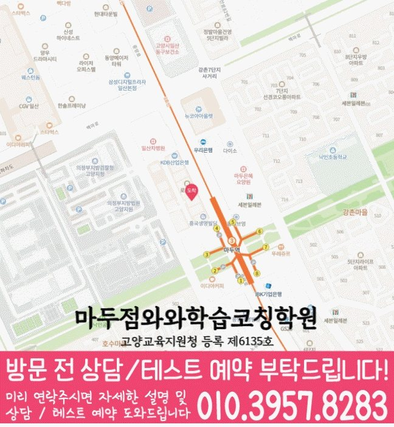

학생이 바로 적용할 공부 방법
막히는 부분을 골라 실행 방법과 기록 양식을 살펴보세요.
마두동에서 안내하는 지점은 와와학습코칭센터 마두점입니다.
자료에 기재된 안내 학년: 국어 초4~초6 / 중1~중3 / 고1~고3 · 영어 초1~초6 / 중1~중3 / 고1~고3 · 수학 초1~초6 / 중1~중3 / 고1~고3 · 과학 초1~초6 / 중1~중3 / 고1~고3 · 사회 중1~중3 / 고1~고3
실제 방문 주소: 경기 고양시 일산동구 중앙로 1191 굿모닝법조타운 1 604호
마두점 수업 조건·교육비·공간 사진 확인
마두점 선생님 소개에는 「학습 순서 설계」 · 「다음 질문 남기기」 · 「학습 전후 비교」 같은 지도 방향이 담겨 있습니다. 최근 풀이·복습 기록에서 필요한 도움을 골라 질문을 준비해 보세요. 실제 담당 과목과 수업 배정은 상담에서 확인하세요.
수업 안내 이미지

이미지를 누르면 원본 크기로 확대해 작은 글씨를 읽을 수 있습니다. 공통 수업 안내이며, 실제 과목·학년·시간은 지점 정보와 함께 확인해 주세요.
지점·과목 안내
마두동에서 수업을 알아보는 학생에게 안내하는 지점은 와와학습코칭센터 마두점입니다. 지점 위치와 과목별 학년을 먼저 확인해 주세요.
제공 자료에 기재된 학년입니다. 현재 개설 과정·수업 시간·반 편성은 상담에서 확인해 주세요. 안내가 없는 학년은 수업 가능 여부가 확인되지 않았습니다.
센터 위치 안내

와와학습코칭센터 마두점 주소: 경기 고양시 일산동구 중앙로 1191 굿모닝법조타운 1 604호
지도를 누르면 원본 크기로 확대할 수 있습니다. 네이버 지도에서 주소와 이동 경로 확인 · 상담 대표전화 010-6839-8283
학습 상담 준비
마두동에서 수업을 찾는 학생에게 연결된 지점은 와와학습코칭센터 마두점입니다. 필요한 과목과 학년을 확인한 다음 실제 통학 일정에 맞춰 상담을 준비해 주세요.
함께 의논할 주제 학습 우선순위 정하기·오답 재확인 습관
가장 도움이 필요한 과목, 현재 교재, 학교 진도를 알려 주세요. 과목별 안내 학년이 다르므로 여러 과목을 함께 수강하려면 각각 확인해 주세요.
하교 시간과 다른 활동을 포함한 일주일 시간표를 준비해 주세요. 위의 실제 지점 주소를 기준으로 이동 시간을 살펴보고 수업 요일과 시작 시간을 문의해 주세요.
학교와 일정
지역 참고 학교이며, 재원 여부나 학교별 반 운영을 뜻하지 않습니다. 재학 중인 학교의 교재·시험 범위·하교 시간을 기준으로 상담해 주세요.
자주 묻는 질문
자료에 기재된 학년은 국어 초4~초6 / 중1~중3 / 고1~고3, 영어 초1~초6 / 중1~중3 / 고1~고3, 수학 초1~초6 / 중1~중3 / 고1~고3, 과학 초1~초6 / 중1~중3 / 고1~고3, 사회 중1~중3 / 고1~고3입니다. 현재 개설 과정과 수업 시간은 지점 상담에서 확인해 주세요.
센터별 교습비 자료에서 안내 금액을 확인할 수 있습니다. 희망 과목·학년을 알려 주고 현재 과정의 교습비, 교재비 등 추가 비용, 수업 요일과 시간을 확인해 주세요.
학생이 푼 문제와 실제 공부량을 어떻게 확인하는지, 오답을 언제 다시 보는지, 계획한 양을 끝내기 어려울 때 어떻게 조정하는지 물어보세요. 점검 주기와 학부모 안내 방식도 함께 확인해 주세요.
안내받은 수강 과목·학년, 수업 요일·시간, 교습비와 추가 비용을 함께 적어 두세요. 학생이 시작할 학습 범위와 과제량, 다음에 학습 상태를 확인할 시점도 정리하면 계획을 이어 가기 좋습니다.
함께 읽으면 도움이 되는 자료
공부 방법부터 교재 선택과 상담 준비까지, 지금 필요한 자료를 골라 보세요.
막히는 부분을 골라 실행 방법과 기록 양식을 살펴보세요.
학생이 실제로 해 본 결과를 보고 교재의 역할을 정해 보세요.
학생의 공부 기록을 바탕으로 수업과 다음 목표를 비교해 보세요.
학생의 공부와 교재 선택을 돕는 참고 자료입니다. 지점의 개설 과목·학년과 실제 사용 교재는 별도로 확인해 주세요.